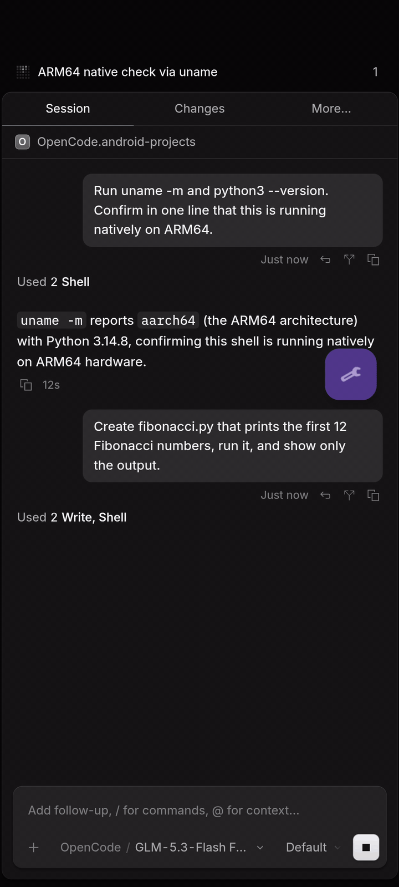

Native agent
The opencode server and agent run directly on Android. The phone does the work, not a PC somewhere else.
Unofficial client for opencode · native edition
OpenCode Android runs the opencode agent on the phone itself. Edit real files, run shell commands, use the built-in terminal and drive apps over wireless ADB. One arm64 APK. Nothing to install on a PC.

One toolbox. Install anything from the chat.
The agent runs on the phone itself. No remote server needed, and the work stays on the device.
The opencode server and agent run directly on Android. The phone does the work, not a PC somewhere else.
A real interactive shell with git, python3, node, ssh, curl and apt/pkg preinstalled. Add clang, rust or ffmpeg straight from the chat.
Inspect and edit real project files from the chat. The agent works on the files in your workspace, not on a copy.
Optional: pair wireless debugging and let the agent open apps, tap, type, read the UI and take screenshots.
Install one arm64 APK on Android 8 or newer. Root access is not needed and the agent runs without Termux.
The bundled opencode runtime updates from GitHub with checksum verification and automatic rollback if something fails.
The agent and its tools run as native processes on the device. No server across the room.
On the device →
OpenCode Android starts its local server and opens the chat as soon as it is healthy.
Pick your edition: v2 / v5 is the new interface (opencode 2.x); v1 / v4 is the classic chat-first app (opencode 1.x). Both are standalone and install side by side.
Get OpenCodeAndroid-v5.*.apk for v2, or v4.*.apk for the classic v1, from GitHub Releases.
Allow installs from your browser or file manager if Android asks. Play Protect may warn about an app from outside the store.
Follow the short first-run setup, choose a model and create a session.
The demo shows the native edition running shell commands, writing files and checking that the agent is really running on ARM64.
The phone does the work. The agent, the shell and the files all live on the device — no PC in the room.
Yes. The app is MIT-licensed and the source code is on GitHub.
No. Both editions run the agent entirely on the phone. Termux and a PC are not used; root is optional, only for commands that need it.
v2 (new UI, opencode 2.x) and v1 (classic chat-first, opencode 1.x) are separate apps that install side by side with their own storage. Both are standalone; v1 sessions are not migrated to v2.
No. It is an unofficial Android client for the open-source opencode agent. It is not affiliated with the opencode project.
The default is the free opencode.ai model. You can connect other providers in opencode settings and pick a model in the app.
The app checks GitHub for new opencode runtime releases and for new versions of the app. Runtime updates are verified and can roll back automatically.